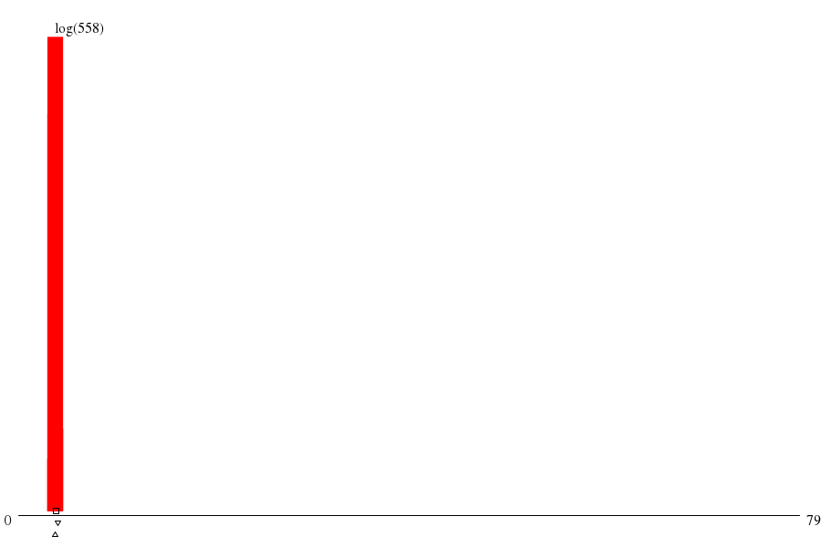

|  | ||
| maxs | mins | |
|
(763.su) 7911 |
(386.su) 367 |
|
|
(0.summ) 1188 |
(762.su) 367 |
|
|
(128.su) 370 |
(708.su) 368 |
|
|
(257.su) 370 |
(742.su) 368 |
|
|
(390.su) 370 |
(735.su) 368 |
| disk (MB) | mode ▵ | μ ▫ | (μ+σ)/μ | 1st alloc. max value | 1st alloc. max through ▿ | 1st alloc. min waste |
| -- 386.925 xE6 |
-- 397.410 xE6 |
-- 1.723 |
throu: 1.000 waste: 95.32%
alloc: 8.295 xE9 |
throu: 19.720 waste: 8.19%
alloc: 419.430 xE6 |
throu: 19.720 waste: 8.19%
alloc: 419.430 xE6 |